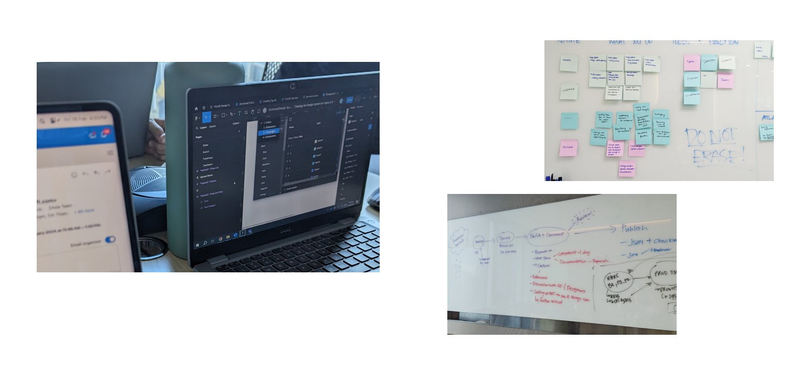
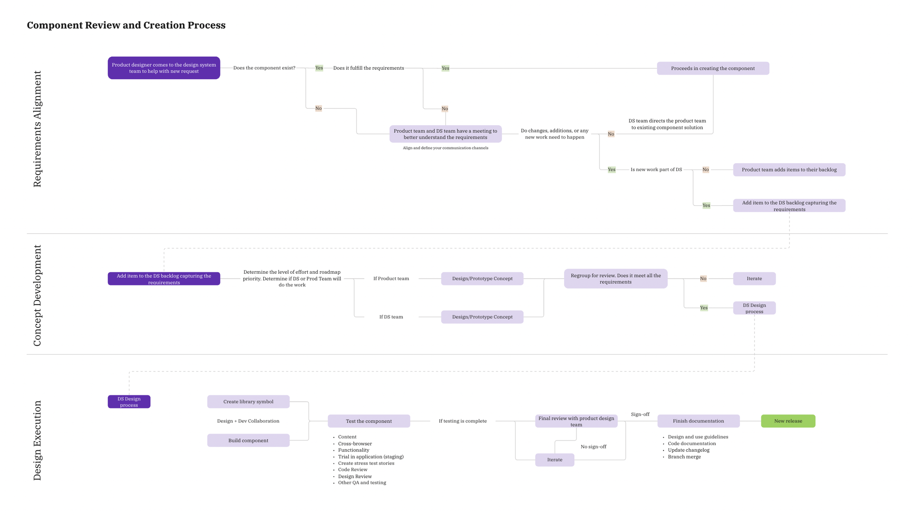
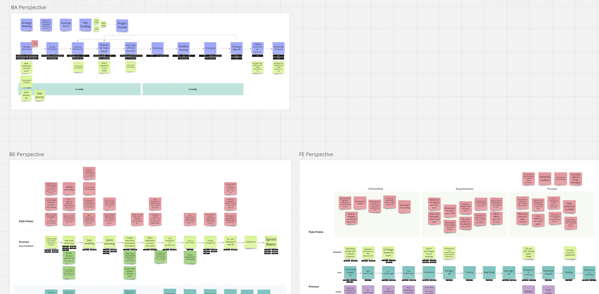
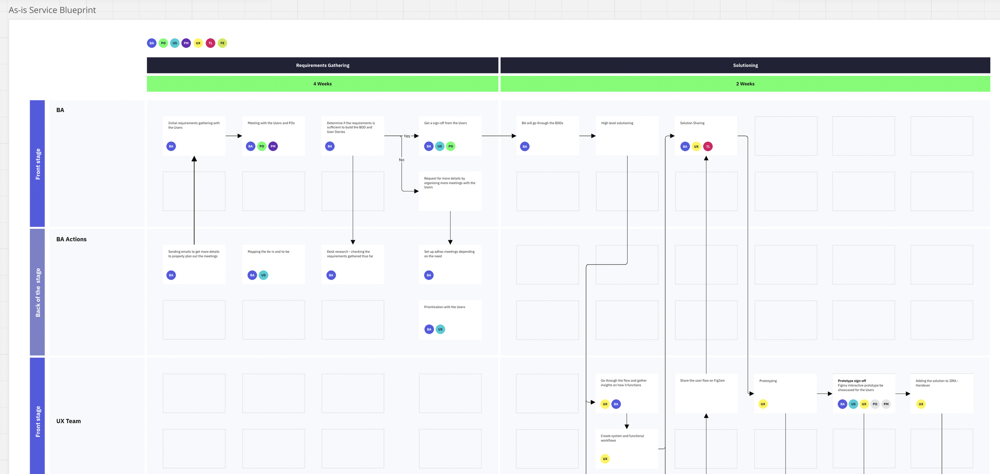
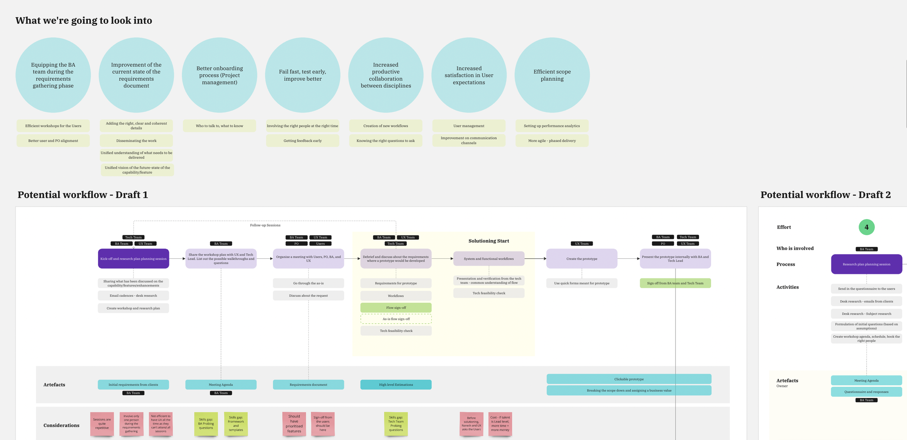

A design operations engagement to uplift a UX team’s skills, standardise delivery workflows, and position design as a strategic function — delivered across two parallel streams for a leading global investment firm.
A leading global investment firm wanted to mature its in-house UX team. Designers had raw talent but no structured development path, inconsistent skill levels, and fragmented delivery workflows. The result: uneven outputs, siloed decision-making, and UX positioned as a production function rather than a strategic one.
The brief came without a defined scope. My first move was to assess the landscape and carve the engagement into distinct, manageable streams — each with clear deliverables, timelines, and success criteria.
I led the engagement end-to-end — from scoping and assessment through training design, workflow redesign, and implementation support.
1:1 evaluations, capability mapping, UX maturity framework benchmarking, skills gap analysis
Personalised growth plans, hands-on workshops, real-world project application, progress tracking
Workflow mapping, bottleneck analysis, task ownership definition, service design blueprinting, industry benchmarking
Collaborative refinement workshops, stakeholder reporting, feedback loops, KPI tracking
Structured updates, decision-ready reports, progressive disclosure, cross-functional alignment sessions
The engagement started with a broad mandate and no defined scope. I met with leadership and the UX team to assess the current state, then structured the work into three streams — each addressing a different layer of the maturity challenge.
Without clear scope, the risk was scope creep in every direction. By dividing the work into streams, I could set expectations early, give each stream its own success criteria, and let the client see exactly what they were getting at each stage. Stream 3 was deliberately deferred — impending organisational restructuring meant any integration work would be invalidated within months.
Individual designers lacked a structured development path. Skill levels were inconsistent across the team, design decisions weren’t grounded in data, and designers lacked the confidence to operate strategically. The gap wasn’t talent — it was the absence of a system to grow it.
I structured the approach to move from assessment to sustained improvement, ensuring each step built on the last.
Individual sessions with each designer to assess current skills, identify growth areas, and align training objectives with stakeholder goals.
Mapped the team’s existing capabilities, identified strengths and skill gaps, and benchmarked against industry best practices to create a customised framework.
Developed individual plans targeting specific competencies — user research, data-driven design, interaction design — with collaborative workshops for knowledge-sharing.
Practical sessions on advanced design principles applied to real projects. Not theory — real-world application with immediate feedback.
Gathered feedback on training sessions, tracked individual progress, and refined the approach based on what was landing and what wasn’t.
Established ongoing feedback mechanisms, set KPIs for measuring impact, and ran regular catch-ups to address challenges and celebrate wins.
A blanket training programme would have wasted time on skills some designers already had, while missing the specific gaps others needed to close. By assessing each designer individually first, I could target the exact competencies that would move them — and the team — forward fastest. The result: every hour of training was relevant to the person receiving it.

Workshops in action — mapping processes, capturing barriers, and co-creating solutions with the team

Component review and creation process — one of the standardised workflows developed during the engagement
The delivery team faced inefficiencies from a lack of unified and standardised design workflows. Processes were fragmented, design outputs were inconsistent, and there was no systematic approach to cross-functional collaboration. UX was embedded in delivery but not integrated into it.
I followed the same principle as Stream 1: understand the current state before designing the future one. This stream focused on the team’s operational layer — how work moves, who owns what, and where things break down.
Met with team leads to map current workflows — time spent on each activity, approval tiers, handoff points. Uncovered bottlenecks and friction points that weren’t visible at the leadership level.
Pinpointed areas needing enhancement and clearly defined ownership of each task. This step drove accountability and eliminated the grey zones where work stalled or duplicated.
Analysed collected data to map inefficiencies and pain points, creating a clear picture of where improvements were needed and which changes would have the highest impact.
Built a service blueprint mapping how the agile team works together. Asked each team about their barriers and pain points, then identified which barriers directly affected the UX team and where handoffs were breaking.
Co-created a new unified workflow with the team — not imposed top-down, but shaped collaboratively so everyone had ownership. Benchmarked against industry standards to validate the approach.
Compiled findings into stakeholder reports and established a feedback loop for monitoring implementation — allowing real-time adjustments as the team adopted new processes.
A new process document would have sat in a shared drive. A service design blueprint did something different: it showed every team where they intersected with UX, made the handoff points visible, and gave leadership a single artefact to evaluate whether the system was working. It became the alignment tool, not just the documentation.

Cross-functional service blueprint — mapping where each team intersects with UX and where handoffs break down

Workflow exploration — from identifying barriers across teams to iterating on potential workflow designs

The co-created final workflow — a unified 7-step process built with the team, not imposed on them
Both streams ran in parallel, feeding into each other. Stronger individual skills meant designers could operate within the new workflows with confidence. Better workflows meant individual growth had a system to land in.
Designers gained stronger skills in user research, data-driven decision-making, and interaction design. Personalised growth plans ensured every designer was developing the specific competencies that mattered most for their role and the team’s strategic direction. Confidence in applying advanced design principles rose, leading to higher-quality outputs and more effective design solutions.
Streamlined workflows led to faster decision-making and improved task execution across teams. The unified design process improved cross-functional collaboration and aligned teams with strategic goals. The service design blueprint created a scalable framework — not just a process for now, but a foundation for future growth.
The two streams were designed to compound. Individual upskilling without better processes would have meant stronger designers trapped in broken workflows. Better processes without skilled designers would have meant a beautiful system nobody could use. Running both simultaneously created a reinforcing loop: skills fed into process, process amplified skills.
What shifted how I think about design operations and capability building — and what I’d carry into the next engagement.
The instinct on DesignOps engagements is to fix the workflow first. But workflow changes don’t land if the people inside them don’t have the skills to operate differently. Starting with individual assessments gave me the ground truth I needed to design processes that fit actual capability, not aspirational capability.
This engagement started with no defined scope. If I hadn’t structured it into streams with clear deliverables, the work would have expanded in every direction. The act of scoping wasn’t admin — it was the most strategic decision of the engagement. It set expectations, created accountability, and gave the client a clear framework for evaluating what they were getting.
A process document describes what should happen. A service design blueprint shows what actually happens — where teams intersect, where handoffs break, where decisions stall. It became the shared artefact that every team could point to, argue with, and improve. It outlived the engagement.
Stream 3 (organisational integration) was the most ambitious scope. Deferring it wasn’t a failure — it was the right call. With restructuring imminent, any integration work would have been invalidated. Knowing when not to do work is as important as knowing what to do.
Every update was built around a decision point, not a status update. I presented the evidence, showed the options, and asked for a call. This kept leadership involved without slowing the work down — and every recommendation followed causal logic back to the data.
Both streams started with deep assessment — individual evaluations for Stream 1, workflow mapping for Stream 2. I didn’t design solutions until I understood what was actually happening. The assessment phase was the foundation that made everything after it land.
The collaborative refinement workshop wasn’t about generating ideas. It was about getting team leads to co-own the new process. When people help build the system, they adopt it. When you hand them a system, they resist it.
Every phase included mechanisms for course correction. Not retrospectives at the end — real-time feedback built into the process. This meant I could adjust training focus mid-stream based on what was landing, and refine workflows as the team adopted them.
The engagement started with a broad mandate and no scope. It ended with a structured capability programme, a unified delivery process, and a service design blueprint that gave the organisation a scalable foundation for UX maturity. The most important shift wasn’t in the artefacts — it was in how the team saw itself: not as a production function waiting for briefs, but as a strategic partner shaping how products get built.